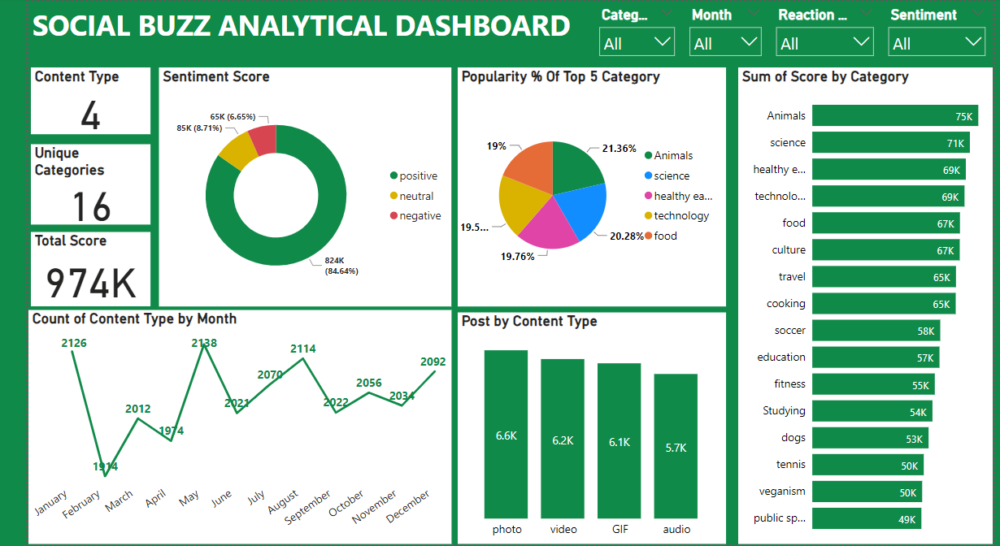
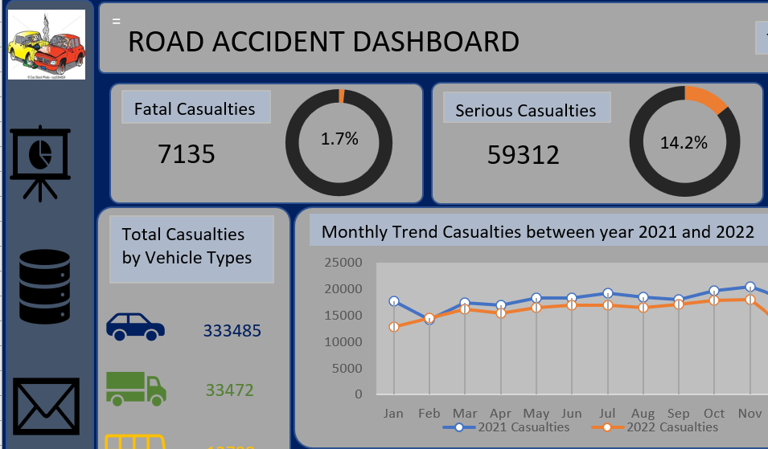
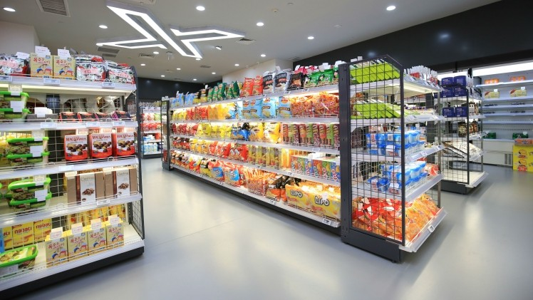

This Power BI project focuses on datasets derived from the Social Buzz analytical Company.The clients seeks insights on their contents related posts. I have embarked on an in-depth exploration of seven given datasets, employing advanced data modeling techniques to extract the three most significant and interconnected datasets: Contents, Reactions, and Reaction Types. I published an artucle on medium that gives a full insights on the process
@https://link.medium.com/BkXNuO6C6Bb


This is an awesome Excel Project on a road accident dashboard for the years 2021 and 2022. It's packed with valuable insights that our clients will find really helpful. The creation of the dashboard involed the following steps : Data Cleaning, Data Processing, Data Analysis, Data Visualization and Insights and Recommendations.

I'm excited to share a project I've been working on since completing the KPMG Data Analytics Virtual Internship. I had the privilege of diving into the sales datasets provided by Sprocket Central Pty Ltd, a medium-sized bikes and cycling accessories organization.
One of the most rewarding aspects of this project was the opportunity to explore the data and formulate my own questions for visualization.

This is a sales dashboard of all type of adidas products.In this project, I performed an analysis of 13 Columns and 9649 Rows on the sales of ADIDAS in th United States Using dataset retrieved from Kaggle. This project went through rigorus data cleaning, Data Processing and the Creation Of Dashboar Using Excel

In this project, I performed an analysis on data exploration in a sales dataset.This is a Store Sales Insights Leveraging the power of MySQL, I delved deep into the data, unearthing valuable information.